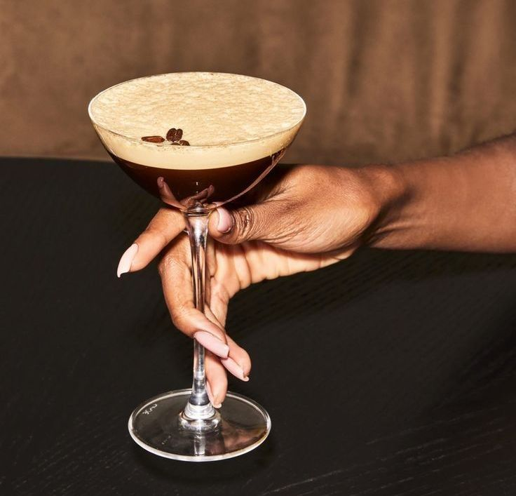

Learn how to make a classic Espresso Martini with my easy recipe! This coffee cocktail is perfectly balanced with strong espresso, sweet coffee liqueur, and smooth vodka. It is topped with a creamy, frothy layer and three coffee beans for garnish. It is the perfect after-dinner drink or a fun cocktail to start the party, and with my simple steps, you will be making café-quality drinks right at home in no time.